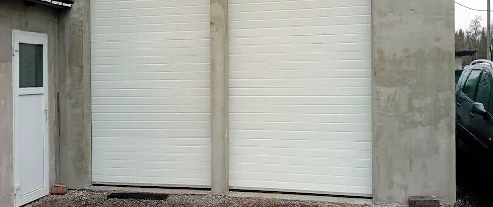
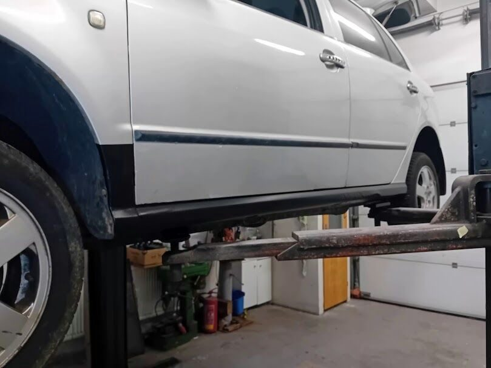
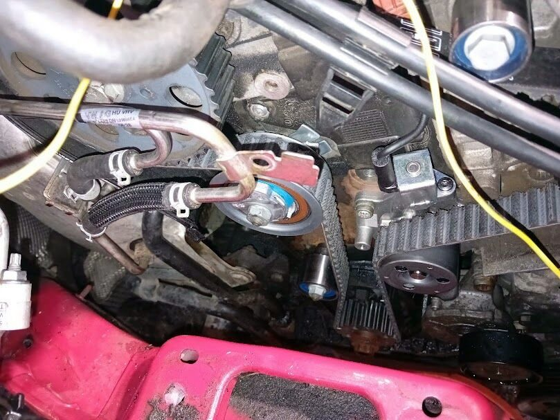
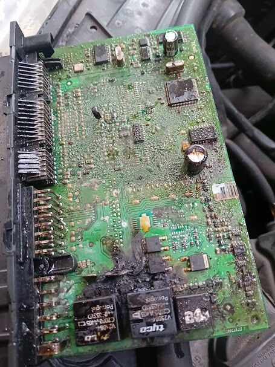
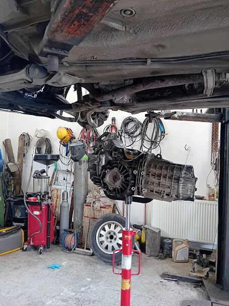
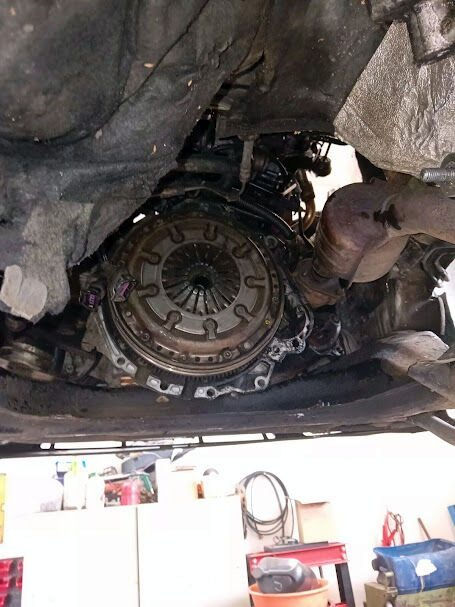
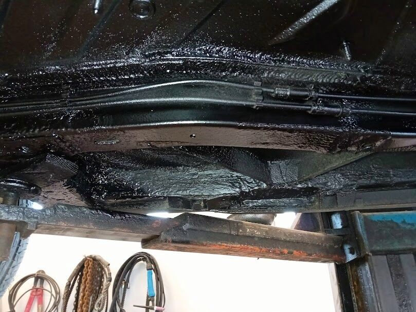
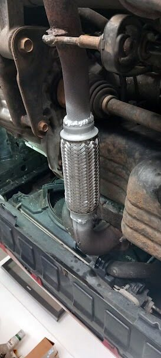

Odtah a autoservis v Karviné
608 060 378Tomáš Kloda, Těšínská 424/17, Karviná-Louky. Odtáhneme auto, které nejede, a opravíme ho na jednom ze dvou zvedáků. Zvedneme i dodávku.

Auto nejede?
Odtah domluvíte na stejném čísle jako opravu. Nejrychlejší je zavolat a hned poslat polohu.
- 1
Zavolejte
Na 608 060 378. Řekněte, co se stalo a o jaké auto jde.
- 2
Pošlete polohu
Telefon ji pošle jednou SMS s odkazem na mapu, nemusíte hledat adresu.
- 3
Odtáhneme k nám
Auto odvezeme do servisu na Těšínskou a domluvíme opravu.
Autoservis
Běžná údržba i větší opravy osobních aut a dodávek.
Dva zvedáky, i pro dodávky

- Oleje a filtry: olejové, vzduchové, palivové, kabinové
- Výměna spojky a rozvodů
- Podvozek
- Brzdy
- Výfuky
- Diagnostika
- Příprava na STK
- Elektroinstalace a řídicí jednotky
Z dílny
Fotky zakázek z let 2024 a 2025.







Zavolejte
608 060 378Otevírací doba
- Po–Pá
- 7:00–16:00
- Sobota
- po telefonické domluvě
- Neděle
- zavřeno